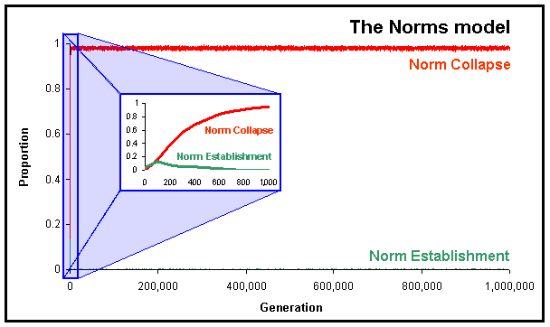

Multi-agent systems
TOC
Principles for designing agent-based solutions
From ‘"Go to the ant”: Engineering principles from natural multi-agent systems’ by H.V.D. Parunak, Annals of Operations Research 75 (1997) p. 69-101 (PDF).
| Monolithic Program | Structured Programming | Object-Oriented Programming | Agent-Oriented Programming | |
|---|---|---|---|---|
| How does a unit behave? (Code) | External | Local | Local | Local |
| What does a unit do when it runs? (State) | External | External | Local | Local |
| When does a unit run? | External | External (called) | External (message) | Local (rules, goals) |
- agents not functions (not functional decomposition)
- keep agents small in size
The motivation for this principle derives not from our theory of multi-agent systems, but from the experience of software engineers that the difficulty of designing, implementing, and launching computer-based systems increases exponentially with the size of the system. Small individual agents are easier to construct and understand than large monolithic systems, and the impact of the failure of any single agent will be minimal. In addition, a large population of agents gives the system a richer overall space of possible behaviors, thus providing for a wider scope of emergent behavior. Very roughly, the number of agents is a multiplicative factor in determining the implementation effort, but an exponent in determining the size of the overall system state space. The effort to code \(100\) agents with \(10\) behaviors each is on the order of \(100*10 = 10^3\), but the resulting state space is on the order of \(10^{100}\).
- keep agents small in time (forgetful)
Naturally occurring agent systems can forget. Pheromones evaporate, and as a result obsolete paths leading to depleted food sources disappear rather than misleading members of the colony. The probability that a wasp will forage decreases as it successfully resists stimulation. Even the death of unsuccessful organisms in an ecosystem is an important mechanism for freeing up resources so that better adapted organisms can flourish.
- keep agents small in scope (local sensing and action)
Software engineering offers another argument for local agent communications. [Dijkstra 1968] warned of the dangers of the Fortran GOTO statement, which gave the programmer the ability to jump from anywhere to anywhere in a program. This powerful tool led to tangled mazes of spaghetti code that were easy to break and almost impossible to correct and maintain. More disciplined structures proved to have the same expressive power, while supporting modularity and restricted interfaces that limited the propagation of faults. Global data reference has the same kind of engineering implications that global transfer of control does. In both cases, direct remote interactions are difficult for humans to understand, maintain, and control. In both cases, global effects can be obtained by propagation of local influences, much more robustly than by providing global influences.
- decentralizd system control
- avoids single points of failure
- avoids performance bottlenecks
- can grow more
- support agent diversity
- diverse agents cover more of the environment and provide better performance
- provide an entropy leak
The Second Law of Thermodynamics observes that closed systems progressively become more disordered over time. It is not obvious that a large collection of agents will organize itself to do useful things. The Second Law warns that the result of such an architecture may be disorder.
Natural agent-based systems do organize themselves with striking efficiency. A common explanation is that a system can become more organized if energy is added to it from the outside (for example, by the metabolism of the food gathered by an insect hive). The addition of energy is necessary for self-organization, but hardly sufficient. Gasoline in construction equipment can erect a building, but the same gasoline in a terrorist’s bomb can destroy it.
In natural systems, agents can organize themselves at the macro level because their actions are coupled to a dissipative or disorganizing process at a micro level. The system can reduce entropy at the macro level by generating more than enough entropy at the micro level to pay its second-law debt. To adopt another metaphor, it provides an entropy leak to drain disorder away from the macro level (where useful work is done) to the micro level (where it won’t interfere with the system’s function).
In one model of this leakage, micro-level dissipation in the environment generates a flow field that the agents can perceive and reinforce and to which they can orient themselves. Insect colonies leak entropy by depositing pheromones whose molecules, evaporating and spreading through the environment under Brownian motion, generate entropy. The resulting flow produces a field that the insects can perceive and to which they orient themselves in making further pheromone deposits.
Phrased another way, from “Toward the Specification and Design of Industrial Synthetic Ecosystems” by H.V.D. Parunak, John Sauter, and Steve Clark, Proceedings of the Fourth International Workshop on Agent Theories, Architectures, and Languages (ATAL’97):
Naturally occurring multi-agent systems often use some form of currency to achieve global self-organization. The two classical examples are the flow of money in a market economy, and the evaporation of pheromones in insect communities. These mechanisms accomplish two purposes. They provide an “entropy leak” that permits self-organization (reduction of entropy) at the macro level without violating the second law of thermodynamics overall, and they generate a gradient field that agents can perceive and to which they can orient their actions, thus becoming more organized. Wherever possible, artificial agent communities should include such a currency. It should have three characteristics:
- It should establish a gradient across the space in which the agents act, either as a potential field or as an actual flow.
- The agents should be able to perceive it and orient themselves to this gradient.
- The agents’ actions should reinforce the gradient (positive feedback).
Simulations
From: From “Appearances Can Be Deceiving: Lessons Learned Re-Implementing Axelrod’s ‘Evolutionary Approach to Norms’” by Jose Manuel Galan and Luis R. Izquierdo (2005) (HTML)

Comparison of focusing on first 1,000 iterations vs. first 1,000,000.
This paper has provided evidence showing that the results reported by Axelrod (1986) are not as reliable as one would desire. We can obtain the opposite results by running the model for longer, by using other mutation rates, by modifying the payoffs slightly, or by using alternative selection mechanisms. These findings should not be understood as a critique of Axelrod’s work, which was developed when the computational power required to undertake a thorough analysis of his model was simply not available, but as a clear illustration of the necessity to revisit and replicate our models in order to clarify the boundaries of validity of our conclusions.
This paper has not only illustrated the significance of replication but it has also highlighted some best practice guidelines that agent-based modellers could find useful when developing their own models. In particular we have shown the importance of:
- Running simulations with stochastic components several times for several periods, so we can study not only how the system can behave but also how it usually behaves.
- Exploring thoroughly the parameter space and analysing the model sensitivity to its parameters.
- Complementing simulation with analytical work.
- Being aware of the scope of our computer models and of the conclusions obtained with them. The computer model is often only one of many possible instantiations of a more general conceptual model. Therefore the conclusions obtained with the computer model do not necessarily apply to the conceptual model.
Emergence
Gala Contemplating the Mediterranean Sea Which at Twenty Meters Becomes the Portrait of Abraham Lincoln - Homage to Rothko (Salvador Dali, 1976, 75.5 by 99.25 inches)
Are the “emergent” properties that are sometimes observed in multi-agent systems “real”? Do these properties exist independently, do they follow different rules, do they play a “causal” role in the system?
Consider Adam Smith’s “invisible hand” (“cooperation without coercion” — Milton Friedman). Smith says that when buyers and sellers act in their own self-interest, the net effect to all of society is that better products are produced more cheaply, which helps everyone. Even though there are many actors, there appears to be a independent force guiding the society as a whole (the invisible hand).
But is the invisible hand, and macroeconomics generally, a truly separate force? Or is it “epiphenomonal,” that is, just a shadow of something else, and having no impact of its own?
There are two aspects of emergent properties that might lead one to think there is something else going on:
- Emergent properties are often hard or impossible to
predict.
“Hard” to predict is different than “impossible.” Chaos theory shows us that some phenomena may be “hard” to predict but that knowing the rules and initial conditions, we can (if nothing else) just simulate each step to find out the final state.
“Impossible” to predict means that even given the rules and initial state, the outcome could not have been predicted. In other words, even performing a simulation does not produce the actual emergent properties. The prime example of this case: consciousness. One might believe that even if all the neurons and their connections of a human brain are set up in software, and a simluation of neuron firings is performed, the simulation still won’t have consciousness…
- Emergent properties seem to follow different laws. Examples can be
found in psychology (e.g. Oedipus complex, obsessive
compulsiveness, etc.), macroeconomics, group evolution (as opposed
to the “selfish gene”), and so on. Moreover, these laws cannot be
deduced or explained in terms of the lower-level processes
(psychological states cannot be explained by neuron firings,
etc.).
Moreover, these emergent properties and their new laws can actually cause the lower level to act differently. For example, the “invisible hand,” as a distinct guiding force, can actually cause individuals to act some particular way. Or conscious states can actually cause neurons to fire a certain way. If this is true, then the invisible hand and consciousness are not just “shadows” of some other causal process, but are in fact doing the causing themselves.
Emergence (Radiolab, August 14, 2007)
1 hour / Download MP3 / Radiolab website for this episode